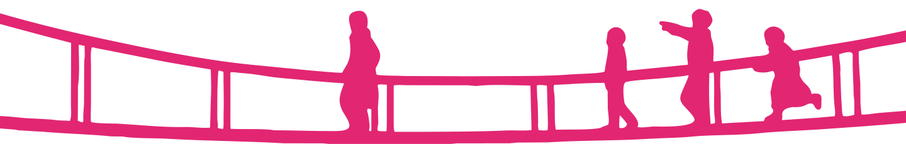

ORGANIZAÇÃO DE INVESTIGAÇÃO PARANORMAL
O SOBRENATURAL NÃO VAI SE INVESTIGAR SOZINHO.
Espíritos, poderes psíquicos, aparições e acontecimentos inexplicáveis. Nós cuidamos de tudo isso. Ou pelo menos tentamos.
Espíritos, poderes psíquicos, aparições e acontecimentos inexplicáveis. Nós cuidamos de tudo isso. Ou pelo menos tentamos.
A Psycho Association é uma organização dedicada à investigação, catalogação e análise de fenômenos paranormais.
De espíritos que aparecem sem serem convidados a indivíduos capazes de dobrar colheres com a mente, nosso trabalho é registrar tudo aquilo que foge do comum. Apesar disso, não prometemos ter todas as respostas.


Telecinese, barreiras, manipulação de energia e outras habilidades que definitivamente não deveriam ser possíveis.

Espíritos, possessões e aparições. Alguns só querem conversar. Outros precisam urgentemente de um exorcismo.

Casas abandonadas, escolas suspeitas e lugares onde até o silêncio parece estar escondendo alguma coisa.

Grupos e indivíduos que utilizam habilidades sobrenaturais para propósitos duvidosos. Nem todo mundo está do nosso lado.

Não importa se você consegue mover objetos com a mente ou se ainda tem medo de dormir com a luz apagada. A Psycho Association está em busca de novos membros para ajudar a investigar e documentar fenômenos paranormais.